Сказка о потерянном времени
Евгений Шварц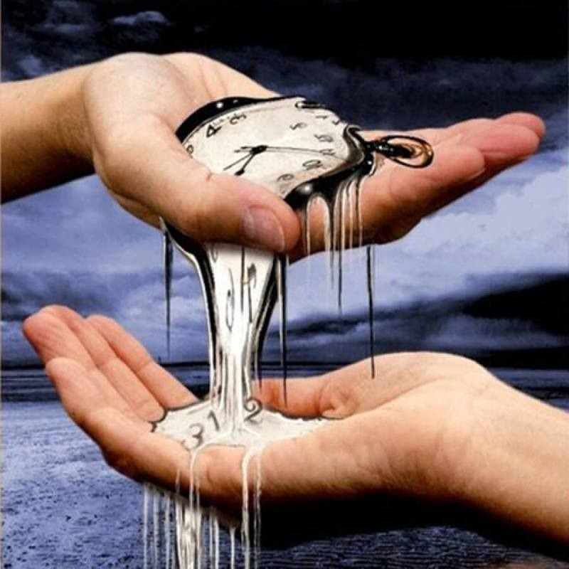
Жил-был мальчик по имени Петя Зубов. Учился он в третьем классе четырнадцатой школы и всё время отставал, и по русскому письменному, и по арифметике, и даже по пению.
— Успею! — говорил он в конце первой четверти. — Во второй вас всех догоню.
А приходила вторая — он надеялся на третью. Так он опаздывал да отставал, отставал да опаздывал и не тужил. Всё «успею» да «успею».
И вот однажды пришёл Петя Зубов в школу, как всегда, с опозданием. Вбежал в раздевалку. Шлёпнул портфелем по загородке и крикнул:
— Тётя Наташа! Возьмите моё пальтишко!
А тётя Наташа спрашивает откуда-то из-за вешалок:
— Кто меня зовёт?
— Это я. Петя Зубов, — отвечает мальчик.
— А почему у тебя сегодня голос такой хриплый? — спрашивает тётя Наташа.
— А я и сам удивляюсь, — отвечает Петя. — Вдруг охрип ни с того ни с сего.
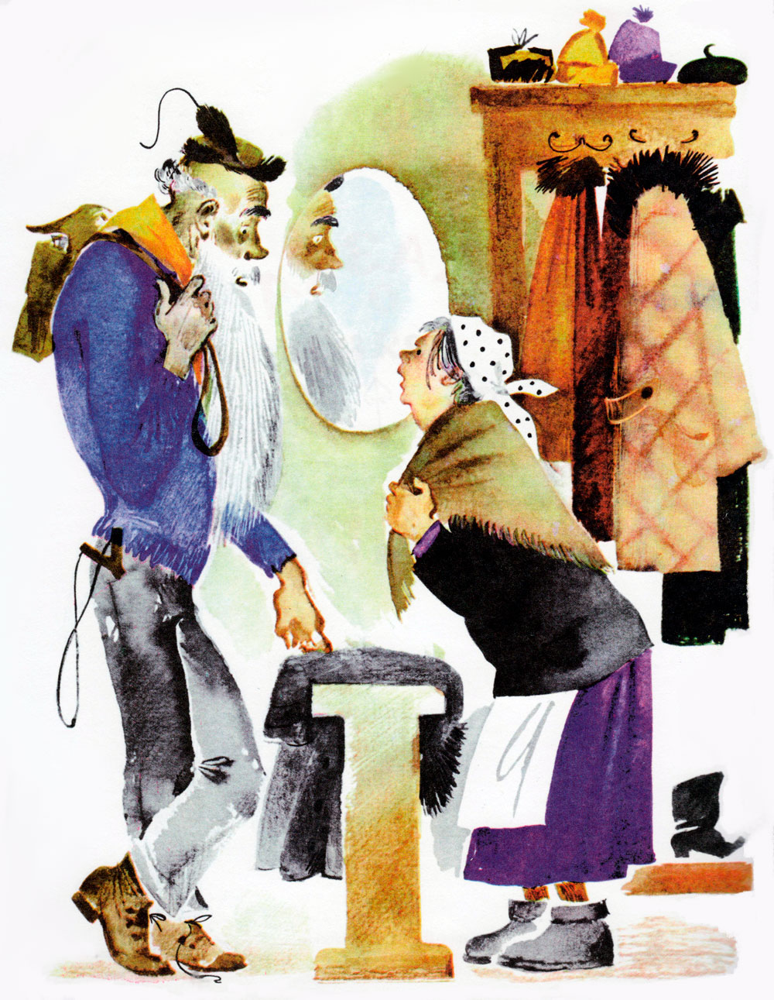
Вышла тётя Наташа из-за вешалок, взглянула на Петю да как вскрикнет:
— Ой!
Петя Зубов тоже испугался и спрашивает:
— Тётя Наташа, что с вами?
— Как что? — отвечает тётя Наташа.- Вы говорили, что вы Петя Зубов, а на самом деле вы, должно быть, его дедушка.
— Какой же я дедушка? — спрашивает мальчик.- Я — Петя, ученик третьего класса.
— Да вы посмотрите в зеркало! — говорит тётя Наташа.
Взглянул мальчик в зеркало и чуть не упал. Увидел Петя Зубов, что превратился он в высокого, худого, бледного старика. Выросли у него борода, усы. Морщины покрыли сеткою лицо.
Смотрел на себя Петя, смотрел, и затряслась его седая борода.
Крикнул он басом:
— Мама! — и выбежал прочь из школы.
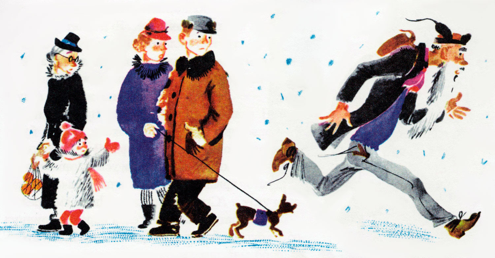
Бежит он и думает:
— Ну, уж если и мама меня не узнает, тогда всё пропало.
Прибежал Петя домой и позвонил три раза.
Мама открыла ему дверь.
Смотрит на Петю и молчит. И Петя молчит тоже. Стоит, выставив свою седую бороду, и чуть не плачет.
— Вам кого, дедушка? — спросила мама наконец.
— Ты меня не узнаёшь? — прошептал Петя.
— Простите — нет, — ответила мама.
Отвернулся бедный Петя и пошёл куда глаза глядят.
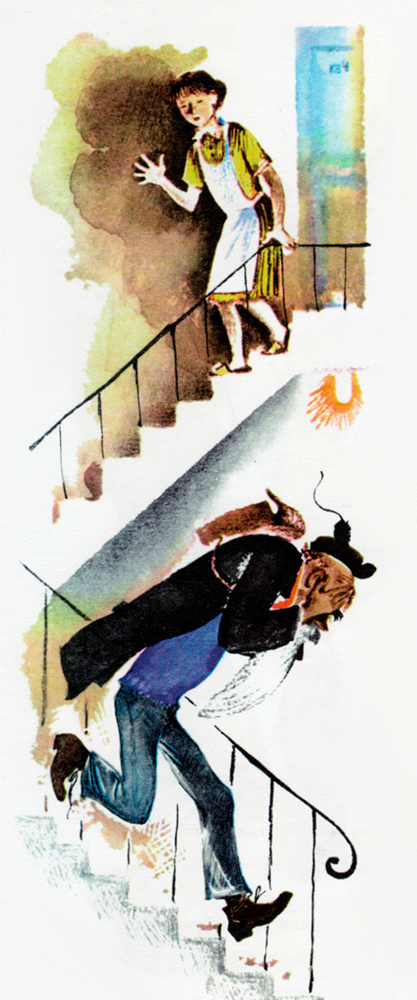
Идёт он и думает:
— Какой я одинокий, несчастный старик. Ни мамы, ни детей, ни внуков, ни друзей… И главное, ничему не успел научиться. Настоящие старики — те или доктора, или мастера, или академики, или учителя. А кому я нужен, когда я всего только ученик третьего класса? Мне даже и пенсии не дадут: ведь я всего только три года работал. Да и как работал — на двойки да на тройки. Что же со мною будет? Бедный я старик! Несчастный я мальчик? Чем же всё это кончится?
Так Петя думал и шагал, шагал и думал и сам не заметил, как вышел за город и попал в лес. И шёл он по лесу, пока не стемнело.
— Хорошо бы отдохнуть, — подумал Петя и вдруг увидел, что в стороне, за ёлками, белеет какой-то домик.
Вошёл Петя в домик — хозяев нет. Стоит посреди комнаты стол. Над ним висит керосиновая лампа. Вокруг стола — четыре табуретки. Ходики тикают на стене. А в углу горою навалено сено.
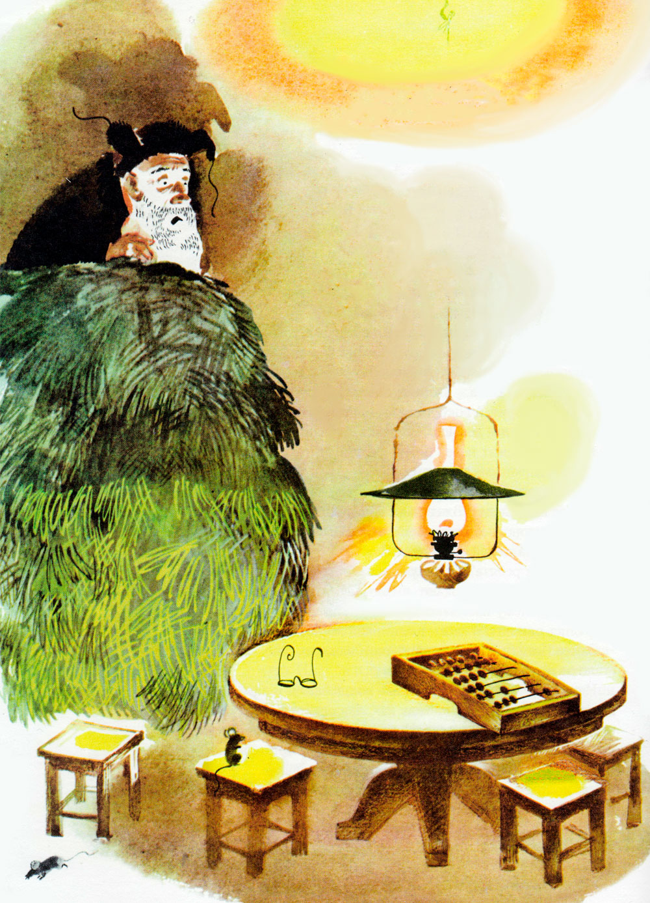
Лёг Петя в сено, зарылся в него поглубже, согрелся, поплакал тихонько, утёр слезы бородой и уснул.
Просыпается Петя — в комнате светло, керосиновая лампа горит под стеклом. А вокруг стола сидят ребята — два мальчика и две девочки. Большие, окованные медью счёты лежат перед ними. Ребята считают и бормочут:
— Два года, да ещё пять, да ещё семь, да ещё три… Это вам, Сергей Владимирович, а это ваши, Ольга Капитоновна, а это вам, Марфа Васильевна, а это ваши, Пантелей Захарович.
Что это за ребята? Почему они такие хмурые? Почему кряхтят они, и охают, и вздыхают, как настоящие старики? Почему называют друг друга по имени-отчеству? Зачем собрались они ночью здесь, в одинокой лесной избушке?
Замер Петя Зубов, не дышит, ловит каждое слово. И страшно ему стало от того, что услышал он.
Не мальчики и девочки, а злые волшебники и злые волшебницы сидели за столом! Вот ведь как, оказывается, устроено на свете: человек, который понапрасну теряет время, сам не замечает, как стареет. И злые волшебники разведали об этом и давай ловить ребят, теряющих время понапрасну. И вот поймали волшебники Петю Зубова, и ещё одного мальчика, и ещё двух девочек и превратили их в стариков. Состарились бедные дети, и сами этого не заметили: ведь человек, напрасно теряющий время, не замечает, как стареет. А время, потерянное ребятами, — забрали волшебники себе. И стали волшебники малыми ребятами, а ребята — старыми стариками.
Как быть?
Что делать?
Да неужели же не вернуть ребятам потерянной молодости?
Подсчитали волшебники время, хотели уже спрятать счёты в стол, но Сергей Владимирович — главный из них — не позволил. Взял он счёты и подошёл к ходикам. Покрутил стрелки, подёргал гири, послушал, как тикает маятник, и опять защёлкал на счётах.
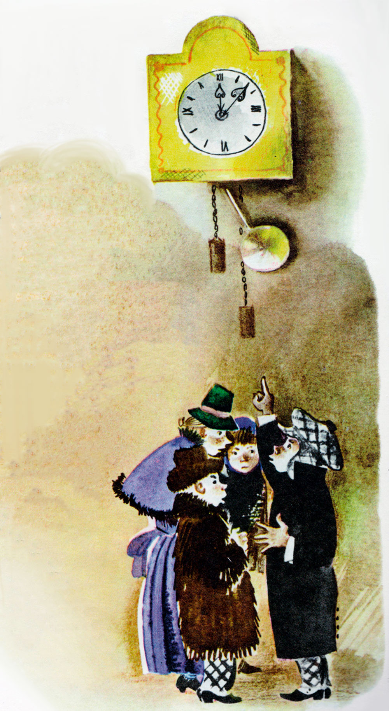
Считал, считал он, шептал, шептал, пока не показали ходики полночь. Тогда смешал Сергей Владимирович костяшки и ещё раз проверил, сколько получилось у него.
Потом подозвал он волшебников к себе и заговорил негромко:
— Господа волшебники! Знайте — ребята, которых мы превратили сегодня в стариков, ещё могут помолодеть.
— Как? — вскрикнули волшебники.
— Сейчас скажу, — ответил Сергей Владимирович.
Он вышел на цыпочках из домика, обошёл его кругом, вернулся, запер дверь на задвижку и поворошил сено палкой.
Петя Зубов замер, как мышка.
Но керосиновая лампа светила тускло, и злой волшебник не увидел Пети. Подозвал он остальных волшебников к себе поближе и заговорил негромко:
— К сожалению, так устроено на свете: от любого несчастья может спастись человек. Если ребята, которых мы превратили в стариков, разыщут завтра друг друга, придут ровно в двенадцать часов ночи сюда к нам и повернут стрелку ходиков на семьдесят семь кругов обратно, то дети снова станут детьми, а мы погибнем.
Помолчали волшебники.
Потом Ольга Капитоновна сказала:
— Откуда им всё это узнать?
А Пантелей Захарович проворчал:
— Не придут они сюда к двенадцати часам ночи. Хоть на минуту, да опоздают.
А Марфа Васильевна пробормотала:
— Да куда им! Да где им! Эти лентяи до семидесяти семи и сосчитать не сумеют, сразу собьются!
— Так-то оно так, — ответил Сергей Владимирович. — А всё-таки пока что держите ухо востро. Если доберутся ребята до ходиков, тронут стрелки — нам тогда и с места не сдвинуться. Ну а пока нечего время терять — идём на работу.
И волшебники, спрятав счёты в стол, побежали, как дети, но при этом кряхтели, охали и вздыхали, как настоящие старики.
Дождался Петя Зубов, пока затихли в лесу шаги. Выбрался из домика. И, не теряя напрасно времени, прячась за деревьями и кустами, побежал, помчался в город искать стариков-школьников.
Город ещё не проснулся. Темно было в окнах, пусто на улицах, только милиционеры стояли на постах. Но вот забрезжил рассвет. Зазвенели первые трамваи.
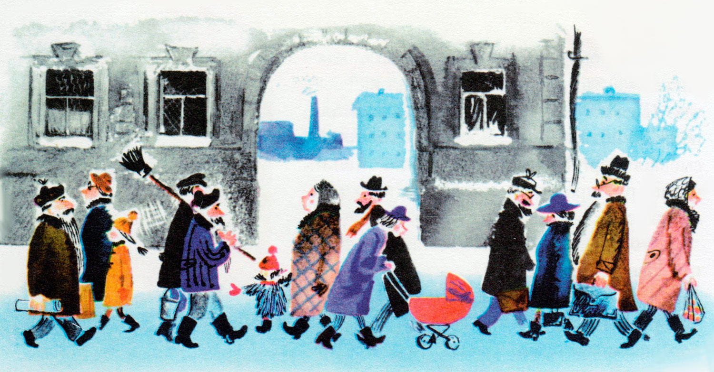
И увидел наконец Петя Зубов — идёт не спеша по улице старушка с большой корзинкой.
Подбежал к ней Петя Зубов и спрашивает:
— Скажите, пожалуйста, бабушка, — вы не школьница?
А старушка как застучит ногами да как замахнётся на Петю корзинкой. Еле Петя ноги унёс. Отдышался он немного — дальше пошёл. А город уже совсем проснулся. Летят трамваи, спешат на работу люди. Грохочут грузовики — скорее, скорее надо сдать грузы в магазины, на заводы, на железную дорогу. Дворники счищают снег, посыпают панель песком, чтобы пешеходы не скользили, не падали, не теряли времени даром. Сколько раз видел всё это Петя Зубов и только теперь понял, почему так боятся люди не успеть, опоздать, отстать.
Оглядывается Петя, ищет стариков, но ни одного подходящего не находит. Бегут по улицам старики, но сразу видно — настоящие, не третьеклассники.
Вот старик с портфелем. Наверное, учитель. Вот старик с ведром и кистью — это маляр. Вот мчится красная пожарная машина, а в машине старик — начальник пожарной охраны города. Этот, конечно, никогда в жизни не терял времени понапрасну.
Ходит Петя, бродит, а молодых стариков, старых детей, — нет как нет. Жизнь кругом так и кипит. Один он, Петя, отстал, опоздал, не успел, ни на что не годен, никому не нужен.
Ровно в полдень зашёл Петя в маленький скверик и сел на скамеечку отдохнуть.
И вдруг вскочил.
Увидел он — сидит недалеко на другой скамеечке старушка и плачет.
Хотел подбежать к ней Петя, но не посмел.
— Подожду! — сказал он сам себе. — Посмотрю, что она дальше делать будет.
А старушка перестала плакать, сидит, ногами болтает. Потом достала из кармана одного газету, а из другого кусок ситного с изюмом. Развернула старушка газету — Петя ахнул от радости: «Пионерская правда»! — и принялась старушка читать и есть. Изюм выковыривает, а самый ситный не трогает.
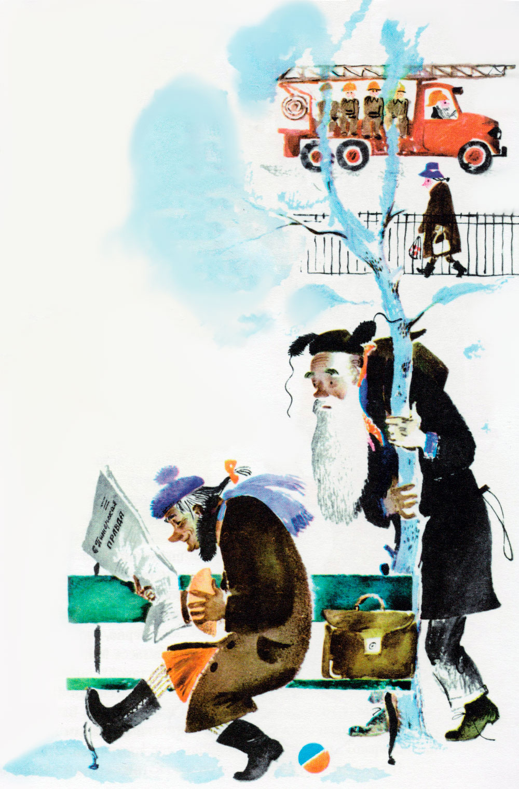
Кончила старушка читать, спрятала газету и ситный и вдруг что-то увидела в снегу. Наклонилась она и схватила мячик. Наверное, кто-нибудь из детей, игравших в сквере, потерял этот мячик в снегу.
Оглядела старушка мячик со всех сторон, обтёрла его старательно платочком, встала, подошла не спеша к дереву и давай играть в трёшки.
Бросился к ней Петя через снег, через кусты. Бежит и кричит:
— Бабушка! Честное слово, вы школьница!
Старушка подпрыгнула от радости, схватила Петю за руки и отвечает:
— Верно, верно! Я ученица третьего класса Маруся Поспелова. А вы кто такой?
Рассказал Петя Марусе, кто он такой. Взялись они за руки, побежали искать остальных товарищей. Искали час, другой, третий. Наконец зашли во второй двор огромного дома. И видят: за дровяным сараем прыгает старушка. Нарисовала мелом на асфальте классы и скачет на одной ножке, гоняет камешек.
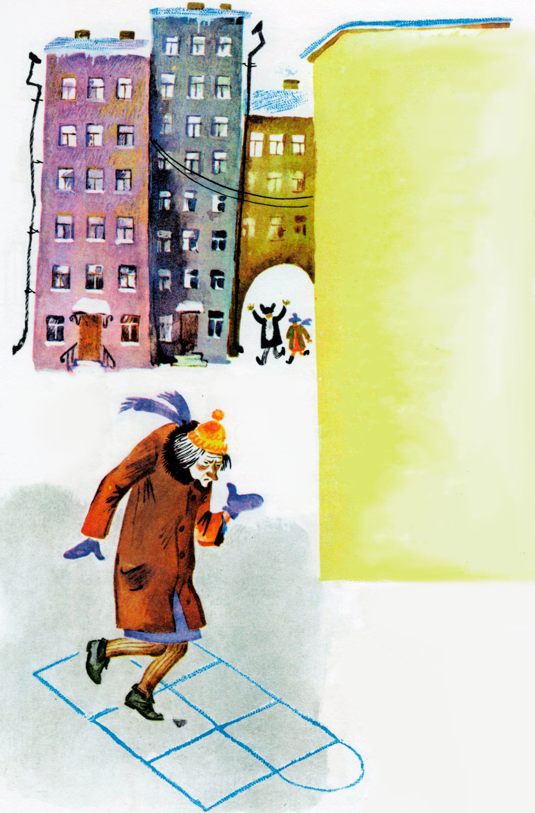
Бросились Петя и Маруся к ней.
— Бабушка! Вы школьница?
— Школьница! — отвечает старушка. — Ученица третьего класса Наденька Соколова. А вы кто такие?
Рассказали ей Петя и Маруся, кто они такие. Взялись все трое за руки, побежали искать последнего своего товарища.
Но он как сквозь землю провалился. Куда только ни заходили старики — и во дворы, и в сады, и в детские театры, и в детские кино, и в Дом Занимательной Науки — пропал мальчик, да и только.
А время идёт. Уже стало темнеть. Уже в нижних этажах домов зажёгся свет. Кончается день. Что делать? Неужели всё пропало?
Вдруг Маруся закричала:
— Смотрите! Смотрите!
Посмотрели Петя и Наденька и вот что увидели: летит трамвай, девятый номер. А на колбасе висит старичок. Шапка лихо надвинута на ухо, борода развевается по ветру. Едет старик и посвистывает. Товарищи его ищут, с ног сбились, а он катается себе по всему городу и в ус не дует!
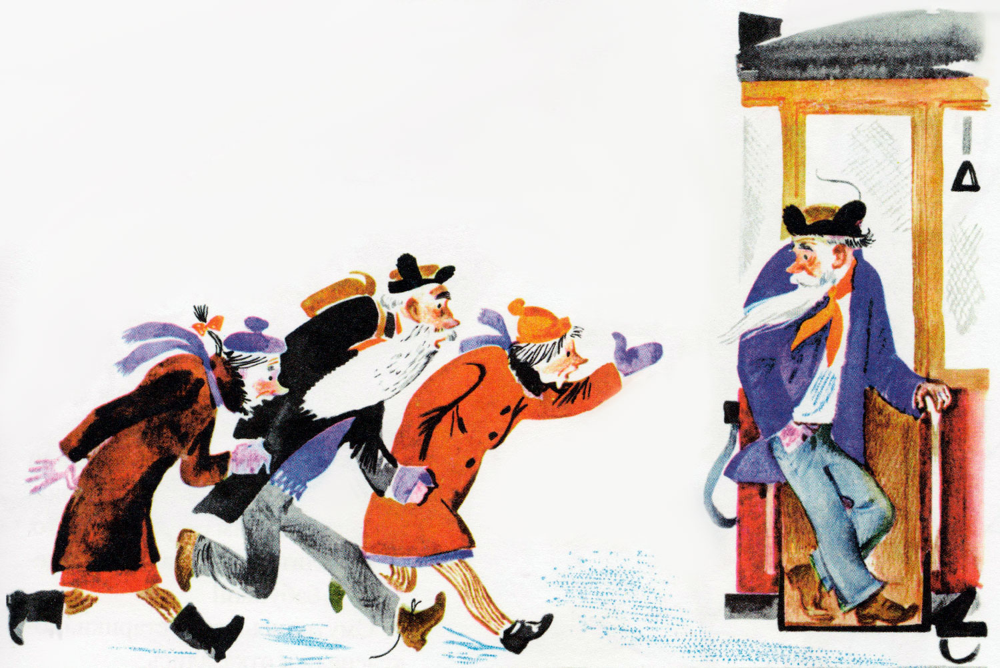
Бросились ребята за трамваем вдогонку. На их счастье, зажёгся на перекрёстке красный огонь, остановился трамвай.
Схватили ребята колбасника за полы, оторвали от колбасы.
— Ты школьник? — спрашивают.
— А как же? — отвечает он. — Ученик второго класса Зайцев Вася. А вам чего?
Рассказали ему ребята, кто они такие.
Чтобы не терять времени даром, сели они все четверо в трамвай и поехали за город к лесу.
Какие-то школьники ехали в этом же трамвае. Встали они, уступают нашим старикам место:
— Садитесь, пожалуйста, дедушки, бабушки.
Смутились старики, покраснели и отказались. А школьники, как нарочно, попались вежливые, воспитанные, просят стариков, уговаривают:
— Да садитесь же! Вы за свою долгую жизнь наработались, устали. Сидите теперь, отдыхайте.
Тут, к счастью, подошёл трамвай к лесу, соскочили наши старики — и в чащу бегом.
Но тут ждала их новая беда. Заблудились они в лесу.
Наступила ночь, тёмная-тёмная. Бродят старики по лесу, падают, спотыкаются, а дороги не находят.
— Ах, время, время! — говорит Петя. — Бежит оно, бежит. Я вчера не заметил дороги обратно к домику — боялся время потерять. А теперь вижу, что иногда лучше потратить немножко времени, чтобы потом его сберечь.
Совсем выбились из сил старички. Но, на их счастье, подул ветер, очистилось небо от туч и засияла на небе полная луна.
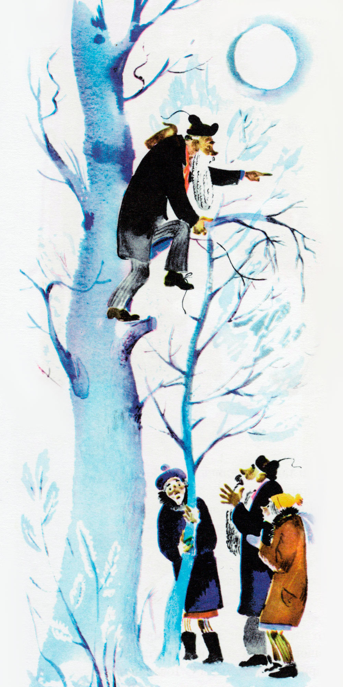
Влез Петя Зубов на берёзу и увидел — вон он, домик, в двух шагах белеют его стены, светятся окна среди густых ёлок.
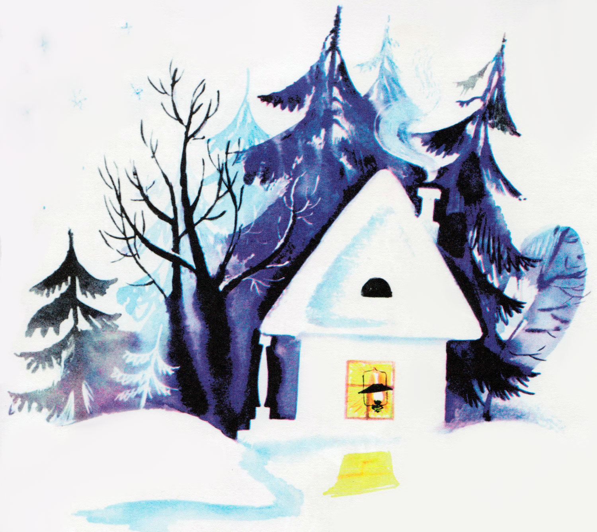
Спустился Петя вниз и шепнул товарищам:
— Тише! Ни слова! За мной!
Подползли ребята по снегу к домику. Заглянули осторожно в окно.
Ходики показывают без пяти минут двенадцать. Волшебники лежат на сене, берегут украденное время.
— Они спят! — сказала Маруся.
— Тише! — прошептал Петя.
Тихо-тихо открыли ребята дверь и поползли к ходикам. Без одной минуты двенадцать встали они у часов. Ровно в полночь протянул Петя руку к стрелкам и — раз, два, три — закрутил их обратно, справа налево.
С криком вскочили волшебники, но не могли сдвинуться с места. Стоят и растут, растут. Вот превратились они во взрослых людей, вот седые волосы заблестели у них на висках, покрылись морщинами щёки.
— Поднимите меня! — закричал Петя. — Я делаюсь маленьким, я не достаю до стрелок! Тридцать один, тридцать два, тридцать три!
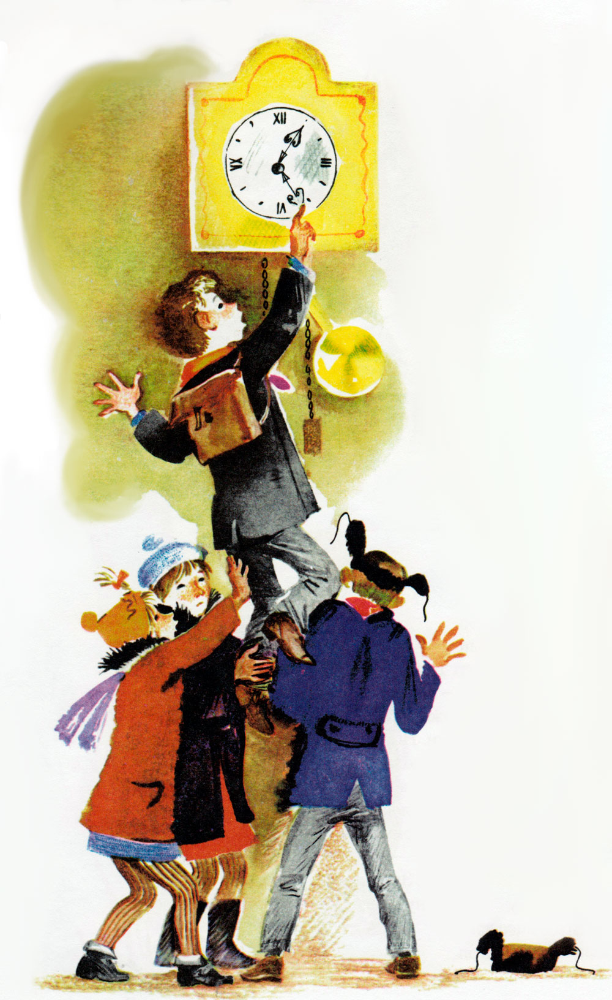
Подняли товарищи Петю на руки.
На сороковом обороте стрелок волшебники стали дряхлыми, сгорбленными старичками. Всё ближе пригибало их к земле, всё ниже становились они.
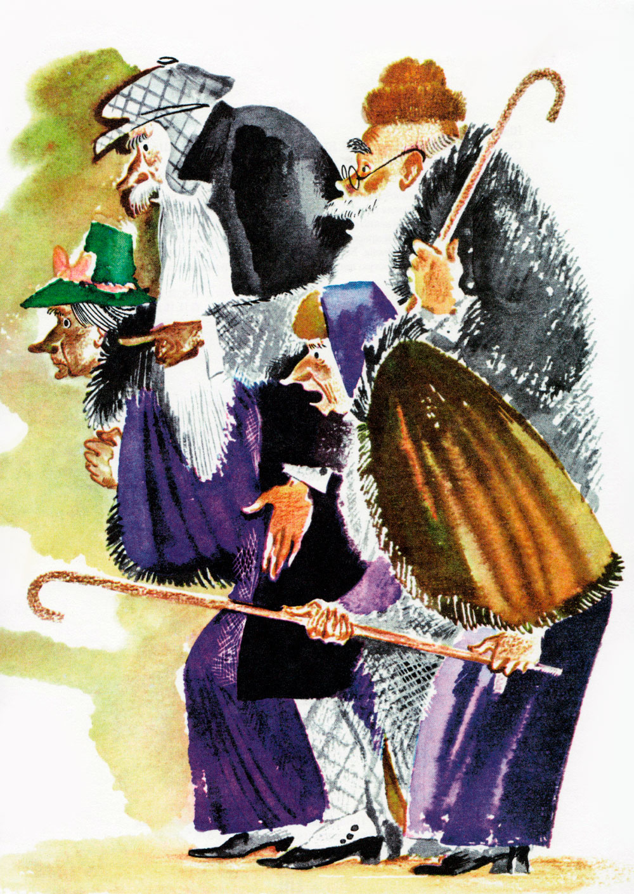
И вот на семьдесят седьмом и последнем обороте стрелок вскрикнули злые волшебники и пропали, как будто их и не было на свете.
Посмотрели ребята друг на друга и засмеялись от радости. Они снова стали детьми. С бою взяли, чудом вернули они потерянное напрасно время.
Они-то спаслись, но ты помни: человек, который понапрасну теряет время, сам не замечает, как стареет.